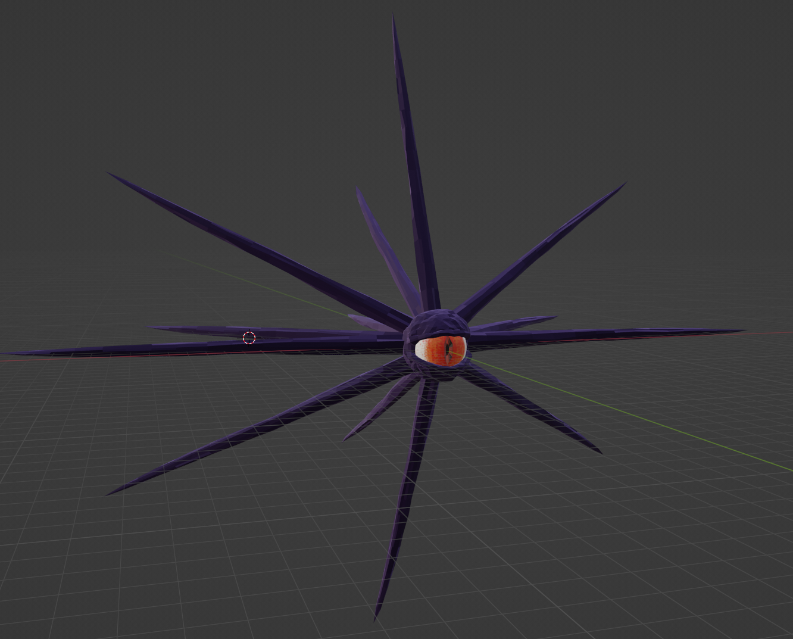

UNFINISHED ELDRITCH GAME
You are the monster. Destroy everything.
Unfinished Eldritch Game is an arcade-style shoot-em-up where you play as a giant eldritch monster on a rampage. To advance, you must spread your corruption as far as possible. While in the corruption spread, you deal more damage, regenerate health, and can dive into the corruption to move quickly and avoid damage.
Unfinished Eldritch Game was made as part of the Pirate Software Game Jam 14. The theme was "Its Spreading". We chose a literal interpretation of the theme, and created a mechanic where you must spread your corruption, similar to the Zerg's Creep from Starcraft. Certain attacks would create patches of corruption, and by channeling an ability, you can cause the spread of the creep to accelerate.
Unfortunately, Unfinished Eldritch Game did not make it across the finish line during the jam. We were beset with problems from the start. The Jam's rules specified teams of 5, in the first few days of work, 2 of our team members caught COVID and could not complete the Jam. A third teammate was in and out of the hospital during the whole 2 week period due to chronic health issues, which meant his time to work on the project was extremely limited.
Despite the difficulties, we successfully created a basic prototype, with the core character movement and attack logic, as well as basic NPC movement.
My task during this Jam was the Character design. I spent my time in Blender and Unreal, modelling, rigging, and animating the main character, "Squidboi". I used an Inverse Kinematics library for Unity to procedurally animate his tentacles, allowing them to react to the environment and simplifying process of animating his attacks.

[ Squidboi — T-Pose Reference ]
The basic Squidboi model.

[ Squidboi — Posed ]
Squidboi in a manually-created pose.

[ Squidboi — Tentacle Inverse Kinematics Demonstration ]
Initial demonstration of character IK

[ Squidboi — Tentacle Inverse Kinematics Demonstration ]
Character IK shown interacting with environment

[ Creep Animation ]
Visualization of the Creep mechanic
[ Gameplay Footage ]
Demonstration of basic mechanics in test level.
Role: Game Designer, 3D Artist, Developer
Genre: Arcade / Shoot-em-up
Platform: TBD
Status: Unfinished — Game Jam Prototype
[OK] Tentacle physics online
[OK] City demolition engine ready
[CRIT] Collateral damage — INTENDED
Rampage initiated. Targets: all of them.